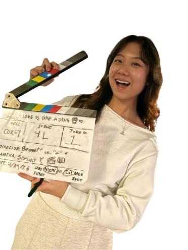

Hi, I'm
Kaitlyn Ooi
I'm studying Electrical and Computer Engineering at the University of Southern California, with a minor in Cinematic Arts. I love building things, watching and making films, exploring new places (solo travelling), and meeting people along the way. When I'm free, you'll probably find me hunting for coffee, hiking, reading, or learning new sports—most recently I've tried squash, fencing, and ice hockey.